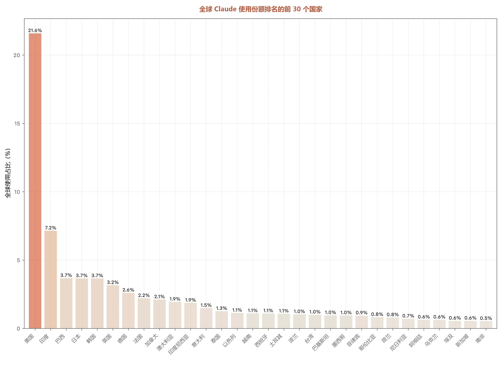
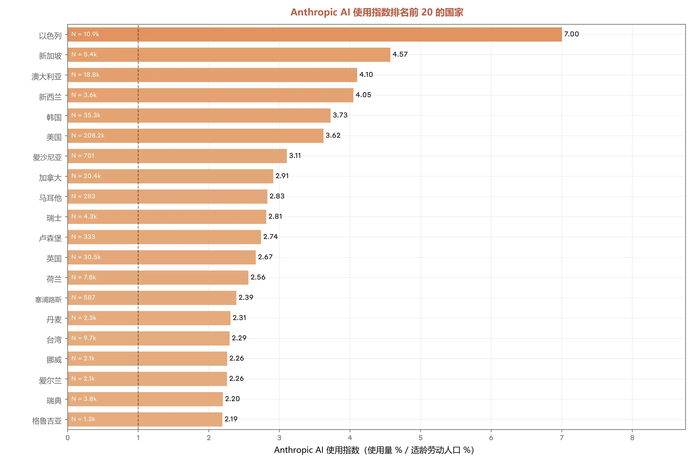
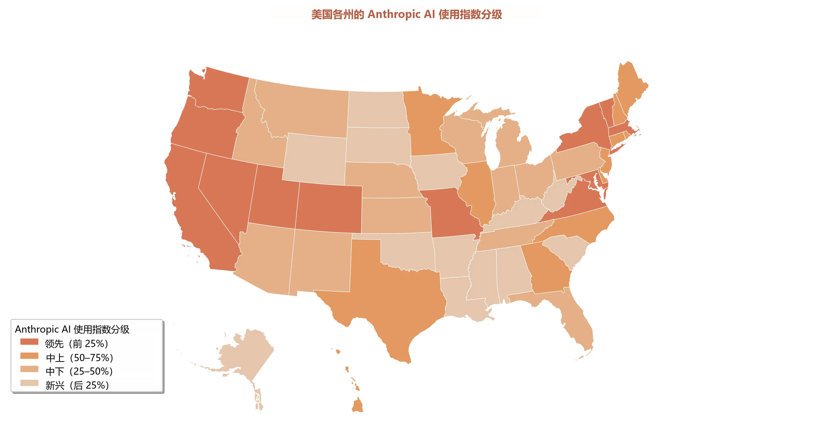
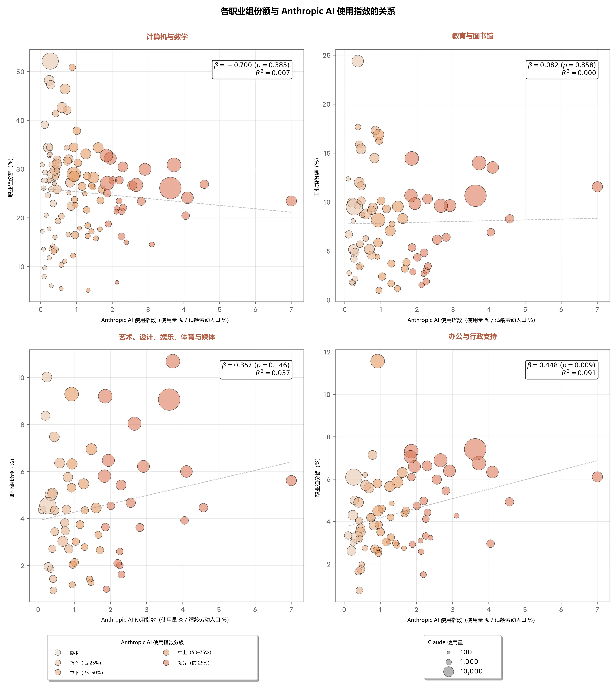
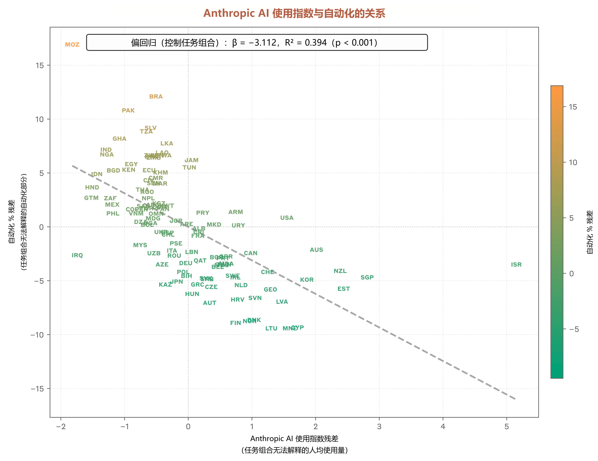
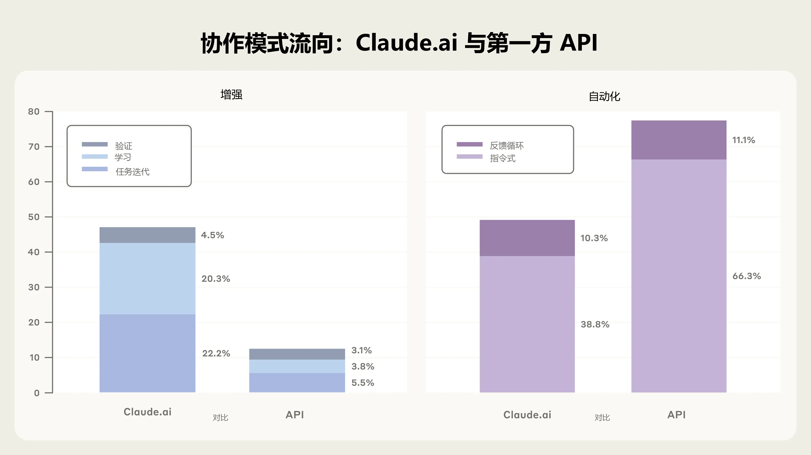
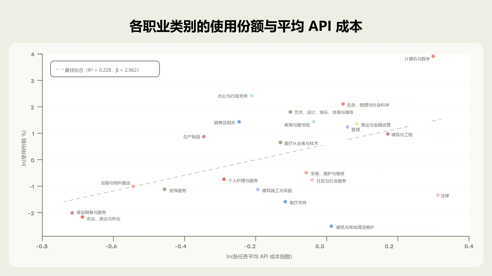

Anthropic经济指数：追踪AI在美国与全球经济中的角色
📖 中文摘要
专业术语注解
AI使用指数：衡量一国AI使用量相对其劳动人口是否偏高的指标人均使用量：平均到每个人身上的AI使用频率指令式对话：用户把完整任务交给AI、几乎不做干预的交互方式自动化：由AI直接产出成果、人类输入很少的工作模式增强协作：人类和AI一起完成任务、互相配合的工作模式工作年龄人口：一国处于劳动年龄（通常15-64岁）的人口📄 中文全文
- 类别： 经济研究（Economic Research）
- 来源： https://www.anthropic.com/research/economic-index-geography
经济研究（Economic Research）
2025 年 9 月 15 日
探索我们的数据
夏威夷的旅行规划、马萨诸塞州的科学研究、印度的 Web 应用开发。乍一看，这三项活动几乎没有共同点。但事实证明，它们是 Claude 在各自地区_过度代表_程度最高的特定用途。
这并不意味着它们是最_受欢迎_的任务：软件工程在全球几乎所有州和国家中仍然遥遥领先。相反，这意味着马萨诸塞州的人比其他地方的人更倾向于请 Claude 帮忙做科学研究——或者，举个例子，巴西的 Claude 用户似乎对语言特别热衷：他们使用 Claude 进行翻译和语言学习的频率约为全球平均水平的六倍。
这些统计结果来自我们的第三期 Anthropic 经济指数报告。在这一最新期中，我们扩大了工作范围，记录正在开始重塑工作和经济的 AI 采用早期模式。我们衡量 Claude 在以下方面的不同使用方式……
- ……在美国境内： 我们提供了有史以来第一份关于 AI 使用在美国各州之间如何不同的详细评估。我们发现，各州的经济构成决定了哪些州人均使用 Claude 最多——而且令人惊讶的是，使用率最高的州_并非_编码占主导地位的州。
- ……在不同国家之间： 我们的新分析发现，各国对 Claude 的使用与收入密切相关，而且使用率较低国家的人们使用 Claude 进行工作自动化的频率_高于_使用率较高的国家。
- ……随时间变化： 我们将最新数据与 2024 年 12 月至 2025 年 1 月和 2025 年 2 月至 3 月的数据进行了比较。我们发现，「指令式」自动化任务的比例从 27% 急剧上升到 39%，表明 AI 的责任（以及用户的信任）在快速增加。
- ……以及按企业用户划分： 我们现在纳入了 Anthropic 第一方 API 客户的匿名数据（除了 Claude.ai 的用户之外），使我们能够首次分析企业的交互。我们发现，API 用户使用 Claude 自动化任务的可能性显著高于消费者，这表明重大的劳动力市场影响可能即将到来。
我们在下方总结了这份报告。此外，我们设计了一个交互式网站，你可以在其中自行探索我们的数据。有史以来第一次，你可以搜索 Claude.ai 使用在每一个美国州和所有我们追踪的职业中的趋势和结果，看看 AI 在你居住的地方或与你从事类似工作的人那里是如何被使用的。最后，如果你想在我们的分析基础上继续构建，我们已经将数据集公开发布，连同我们之前经济指数报告的数据一起。
地理分布
我们扩展了 Anthropic 经济指数，纳入了地理数据。下面我们介绍关于 Claude 如何在各国和美国各州被使用的发现。
国家之间
美国使用 Claude 的程度远超其他任何国家。印度位居第二，其次是巴西、日本和韩国，各自的份额相近。

全球 Claude.ai 使用份额领先的国家。然而，这些国家的人口规模差异巨大。为了考虑这一点，我们用每个国家在世界劳动人口中的份额来调整其在 Claude.ai 使用中的份额。这就得到了我们的 Anthropic AI 使用指数（Anthropic AI Usage Index，AUI）。AUI 大于 1 的国家，其使用 Claude 的频率高于仅根据其适龄劳动人口所预期的水平，反之亦然。

在我们的 Anthropic AI 使用指数上得分最高的二十个国家。从 AUI 数据中，我们可以看到一些较小的、技术先进的国家（如以色列和新加坡）在相对于其适龄劳动人口的 Claude 采用方面领先。这在很大程度上可能可以用收入来解释：我们发现人均 GDP 与 Anthropic AI 使用指数之间存在很强的相关性（人均 GDP 每高 1%，AUI 就高 0.7%）。这很合理：最常使用 Claude 的国家通常也拥有强劲的互联网连接，以及以知识工作而非制造业为导向的经济。但这确实提出了一个经济分化的问题：以往的通用技术，如电气化或内燃机，既带来了巨大的经济增长，也导致了世界各地生活水平的大分流。如果 AI 的效应在较富裕国家被证明最大，这种通用技术可能具有类似的经济影响。
 各国人均 Claude 使用量与人均收入呈正相关。（坐标轴为对数刻度。）
各国人均 Claude 使用量与人均收入呈正相关。（坐标轴为对数刻度。）
美国境内的模式
人均 GDP 与人均 Claude 使用量之间的联系在美国各州之间进行比较时也同样成立。事实上，在美国境内，使用量随收入的增长比国家之间更快：美国境内人均 GDP 每高 1%，人口调整后的 Claude 使用量就高 1.8%。话虽如此，在美国境内，收入对使用量的_解释力_实际上比国家之间更低，因为总体趋势内的方差要大得多。也就是说：除了收入之外，其他因素必须解释人口调整后使用量的更多变化。
还有什么可以解释这种采用差距呢？我们最好的猜测是各州经济构成的差异。美国 AUI 最高的是哥伦比亚特区（3.82），在那里，Claude 的使用频率最不成比例地高的用途是编辑文档和搜索信息，以及华盛顿特区知识工作相关的其他任务。类似地，与编码相关的任务在加利福尼亚州（AUI 总体排名第三的州）尤其常见，而与金融相关的任务在纽约（排名第四）尤其常见。[1] 即使在人口调整后 Claude 使用量较低的州，如夏威夷，使用情况也与经济结构密切相关：夏威夷人请求 Claude 协助旅游相关任务的频率是美国其他地区的两倍。我们的交互式网站包含大量其他此类统计数据。

美国各州相对于其适龄劳动人口的 Claude 采用情况。Claude 使用趋势
自 2024 年 12 月以来，我们一直在追踪人们如何使用 Claude。我们使用一种保护隐私的分类方法，将匿名化对话记录归类到由 O*NET（一个对工作及相关任务进行分类的美国联邦政府数据库）定义的任务组中。[2] 通过这样做，我们可以分析人们交给 Claude 的任务自去年以来发生了怎样的变化，以及人们选择协作的方式——他们选择对 Claude 的工作施加多少监督和输入——发生了怎样的变化。
任务
自 2024 年 12 月以来，计算机和数学类的 Claude 使用在我们的类别中一直占主导地位，约占对话的 37-40%。
但很多事情都变了。在过去九个月里，我们看到「知识密集型」领域持续增长。例如，教育指导任务增长了 40% 以上（占所有对话的比例从 9% 上升到 13%），与物理和社会科学相关的任务份额增加了三分之一（从 6% 上升到 8%）。与此同时，传统商业任务的相对频率有所下降：管理相关任务从占所有对话的 5% 下降到 3%，与商业和金融运营相关的任务份额减半，从 6% 下降到 3%。（当然，按绝对值计算，每个类别的对话数量仍然大幅上升。）
 Claude 使用随时间的变化，显示科学和教育任务的使用增加。
Claude 使用随时间的变化，显示科学和教育任务的使用增加。
总体趋势很嘈杂，但一般来说，随着一个国家人均 GDP 的增加，Claude 的使用会_远离_计算机和数学职业组的任务，转向各种其他活动，如教育、艺术和设计；办公和行政支持；以及物理和社会科学。将下面第一个图中的趋势线与其余三个图进行比较：

随着我们从采用率较低的国家转向采用率较高的国家，Claude 的使用似乎转向了更多样化的任务组合，尽管总体模式是嘈杂的。话虽如此，软件开发仍然是我们追踪的每个国家中最常见的用途。美国的情况看起来类似，尽管我们的样本量限制了我们更详细地探索任务组合如何随采用率变化的能力。
交互模式
正如我们之前讨论过的，我们通常区分涉及_自动化_（automation，AI 以最少用户输入直接产出工作）和_增强_（augmentation，用户与 AI 协作完成事情）的任务。我们进一步将自动化细分为_指令式_（directive）和_反馈循环_（feedback loop）交互，其中指令式对话涉及最少的人类交互，而在反馈循环任务中，人类将现实世界的结果反馈给模型。我们还将增强细分为_学习_（learning，索取信息或解释）、任务迭代（task iteration，与 Claude 协作工作）和_验证_（validation，征求意见反馈）。
自 2024 年 12 月以来，我们发现指令式对话的份额急剧上升，从 27% 上升到 39%。其他交互模式（尤其是学习、任务迭代和反馈循环）的份额因此略有下降。这意味着自动化（49.1%）首次整体上比增强（47%）更常见。一个可能的解释是，AI 正在迅速赢得用户的信任，并越来越多地负责完成复杂的工作。
这可能是模型能力提升的结果。（2024 年 12 月，当我们首次为经济指数收集数据时，Claude 的最新版本是 Sonnet 3.6。）随着模型在预测用户需求和产出高质量工作方面变得更好，用户可能更愿意在第一次尝试时就信任模型的输出。
 自动化似乎随时间在增加。
自动化似乎随时间在增加。
也许令人惊讶的是，在人均 Claude 使用量较高的国家，Claude 的用途倾向于增强，而使用量较低国家的人们则更倾向于自动化。在控制任务组合的情况下，人口调整后 Claude 使用量每增加 1%，与自动化减少约 3% 相关。类似地，人口调整后 Claude 使用量的增加与_远离_自动化（如下面的图表所示）而非趋向自动化相关。
我们还不太确定这是为什么。这可能是因为每个国家的早期采用者对让 Claude 自动化任务感觉更自在，也可能归结于其他文化和经济因素。

人均 Claude 使用量较高的国家倾向于以更具协作性的方式使用 Claude。企业
使用与我们用于 Claude.ai 对话相同的保护隐私方法，我们开始对 Anthropic 第一方 API 客户的一个子集的交互进行抽样，这是一项首创性的分析。[3] API 客户（通常是企业和开发者）使用 Claude 的方式与通过 Claude.ai 访问的用户截然不同：他们按代币付费，而不是按月订阅，并且可以通过自己的程序发出请求。
这些客户对 Claude 的使用尤其集中在编码和行政任务上：我们样本中 44% 的 API 流量映射到计算机或数学任务，而 Claude.ai 上此类任务占 36%。（碰巧的是，大约 5% 的 API 流量专门用于开发和评估 AI 系统。）与之对应的是，与教育职业相关的对话比例较小（API 中为 4%，而 Claude.ai 上为 12%），艺术和娱乐相关对话也较少（5% 对 8%）。
我们还发现，我们的 API 客户使用 Claude 进行任务自动化的频率远高于 Claude.ai 用户。我们 77% 的 API 对话显示出自动化模式，其中绝大多数是指令式的，而只有 12% 显示增强。在 Claude.ai 上，这一比例几乎持平。这可能会产生重大的经济影响：在过去，任务自动化一直与大规模的经济转型以及重大的生产力提升相关联。

Claude.ai 与 API 上使用 Claude 的增强和自动化情况。最后，由于 API 使用是按量付费的，我们还可以探索任务成本的差异（由它们消耗的代币数量差异引起）是否会影响企业选择「购买」哪些任务。在这里，我们发现价格和使用之间存在_正_相关：成本较高的任务类别往往使用更频繁，如下面的图表所示。这让我们认为，模型的基本能力和模型产生的经济价值对企业来说，比完成任务本身的成本更重要。

每个任务的成本与该任务类别占总对话份额的关系图。结论
经济指数旨在提供对 AI 如何影响人们的工作和经济的早期实证评估。到目前为止我们发现了什么？
在我们本报告涵盖的每一项衡量指标中，AI 的采用都显得极不均衡。高收入国家的人们更可能使用 Claude，更可能寻求协作而非自动化，也更可能追求编码之外的各种用途。在美国境内，AI 的使用似乎受到当地经济中主导产业的强烈影响，从科技到旅游。而企业比消费者更愿意把自主权和能动性托付给 Claude。
除了不均衡这一事实之外，我们特别注意到的是，在过去九个月里，指令式自动化在 Claude.ai 的对话中变得更加普遍。人们使用 Claude 的性质显然仍在被定义中：我们仍在集体决定我们对 AI 工具有多大信心，以及我们应该赋予它们多少责任。不过到目前为止，看起来我们正变得越来越习惯于 AI，并愿意让它为我们工作。我们期待随着时间的推移重新审视这一分析，看看用户的选在 AI 模型改进后会在哪里——或者，实际上，_是否_会——稳定下来。
如果你想自己探索我们的数据，可以访问我们专门的 Anthropic 经济指数网站，其中包含我们国家、州和职业数据的交互式可视化。我们未来将用更多数据更新这个网站，这样你就可以继续以你感兴趣的方式追踪 AI 对工作和经济影响的演变。
我们的完整报告可在此处获取。我们希望它能帮助政策制定者、经济学家和其他人更有效地为 AI 带来的经济机遇和风险做好准备。
开放数据
与我们过去的报告一样，我们为本次发布发布了一个全面的数据集，包括地理数据、任务层面使用模式、按任务划分的自动化/增强细分，以及 API 使用概览。数据可在 Anthropic 经济指数网站下载。
与我们合作
如果你有兴趣在 Anthropic 工作，帮助构建支撑这项研究的系统，我们鼓励你申请我们的研究工程师职位。
脚注
- 至于排名第二的犹他州：在进一步调查犹他州的活动时，我们发现其使用的相当大一部分似乎与协同滥用的指标有关——这也反映在犹他州的「指令式」自动化得分远高于平均水平上。不过，我们进行了稳健性检验，并相信这些活动并没有驱动结果。
- 我们辅以一种「自下而上」的任务分类，即 Claude 根据其自身的分类法对对话进行分类，以弥补 O*NET 类别中的任何空白。我们保护隐私的分析方法的完整细节可在此处获取。
- 本节的数据涵盖 2025 年 8 月的 100 万份记录，从一组第一方 API 客户中随机抽样，这些客户约占我们第一方 API 使用量的一半。我们继续根据我们的隐私和保留政策管理数据，我们的分析符合我们的条款、政策和合同约定。
相关内容
了解更多关于 Claude 数学能力的信息
Claude 的一个未发布的研究版本在与黎曼猜想相关的问题上取得了进展。它改进了黎曼 zeta 函数满足该猜想的零点比例的一个长期未破的下界，将其从 41.6% 提高到 67.2%。 了解更多
用 Claude 发现密码学弱点
密码学算法。第一个攻击显著削弱了 HAWK——一种为未来量子计算机能够破解现有标准的世界而构建的数字签名方案。第二个攻击发现了一种攻击轮数缩减的 AES（使用最广泛的对称密码）的新方法。 了解更多
Project Pilot：AI 能操控无人机吗？
我们与 Andon Labs 合作，开发了一系列新的评估来测试 AI 模型使用飞行无人机的能力，最终形成了一个新的基准：Drone-Bench。 了解更多
▸ 英文原文（点击展开）
Anthropic Economic Index: Tracking AI’s role in the US and global economy
- Category: Economic Research
- Source: https://www.anthropic.com/research/economic-index-geography
Economic Research
Anthropic Economic Index: Tracking AI’s role in the US and global economy
Sep 15, 2025
Explore our data
Travel planning in Hawaii, scientific research in Massachusetts, and building web applications in India. On the face of it, these three activities share very little in common. But it turns out that they’re the particular uses of Claude that are some of the most overrepresented in each of these places.
That doesn’t mean these are the most popular tasks: software engineering is still by far in the lead in almost every state and country in the world. Instead, it means that people in Massachusetts have been more likely to ask Claude for help with scientific research than people elsewhere – or, for instance, that Claude users in Brazil appear to be particularly enthusiastic about languages: they use Claude for translation and language-learning about six times more than the global average.
These are statistics we found in our third Anthropic Economic Index report. In this latest installment, we’ve expanded our efforts to document the early patterns of AI adoption that are beginning to reshape work and the economy. We measure how Claude is being used differently…
* …within the US: we provide the first-ever detailed assessment of how AI use differs between US states. We find that the composition of states’ economies informs which states use Claude the most per capita – and, surprisingly, that the very highest-use states aren’t the ones where coding dominates.
* …across different countries: our new analysis finds that countries’ use of Claude is strongly correlated with income, and that people in lower-use countries use Claude to automate work more frequently than those in higher-use ones.
* …over time: we compare our latest data with December 2024-January 2025 and February–March 2025. We find that the proportion of ‘directively’ automated tasks increased sharply from 27% to 39%, suggesting a rapid increase in AI’s responsibility (and in users’ trust).
* …and by business users: we now include anonymized data from Anthropic’s first-party API customers (in addition to users of Claude.ai), allowing us to analyze businesses’ interactions for the first time. We find that API users are significantly more likely to automate tasks with Claude than consumers are, which suggests that major labor market implications could be on the horizon.
We summarize the report below. In addition, we’ve designed an interactive website where you can explore our data yourself. For the first time, you can search for trends and results in Claude.ai use across every US state and all occupations we track, to see how AI is used where you live or by people in similar jobs. Finally, if you’d like to build on our analysis, we’ve made our dataset openly available, alongside the data from our previous Economic Index reports.
Geography
We've expanded the Anthropic Economic Index to include geographic data. Below we cover what we've learned about how Claude is used across countries and US states.
Across countries
The US uses Claude far more than any other nation. India is in second place, followed by Brazil, Japan, and South Korea, each with similar shares.
Leading countries in terms of global Claude.ai use share.
However, there is huge variation in population size across these countries. To account for this, we adjust each country’s share of Claude.ai use by its share of the world’s working population. This gives us our Anthropic AI Usage Index , or AUI. Countries with an AUI greater than 1 use Claude more often than we’d expect based on their working-age population alone, and vice-versa.
The twenty countries that score highest on our Anthropic AI Usage Index.
From the AUI data, we can see that some small, technologically advanced countries (like Israel and Singapore) lead in Claude adoption relative to their working-age populations. This might to a large degree be explained by income: we found a strong correlation between GDP per capita and the Anthropic AI Usage Index (a 1% higher GDP per capita was associated with a 0.7% higher AUI). This makes sense: the countries that use Claude most often generally also have robust internet connectivity, as well as economies oriented around knowledge work rather than manufacturing. But it does raise a question of economic divergence: previous general-purpose technologies, like electrification or the combustion engine, led to both vast economic growth and a great divergence in living standards around the world. If the effects of AI prove to be largest in richer countries, this general-purpose technology might have similar economic implications.
Claude use per capita is positively correlated with income per capita across countries. (Axes are on a log scale.)
Patterns within the United States
The link between per capita GDP and per capita use of Claude also holds when comparing between US states. In fact, use rises more quickly within income here than across countries: a 1% higher per capita GDP inside the US is associated with a 1.8% higher population-adjusted use of Claude. That said, income actually has less explanatory power within the US than across countries, as there’s much higher variance within the overall trend. That is: other factors, beyond income, must explain more of the variation in population-adjusted use.
What else could explain this adoption gap? Our best guess is that it’s differences in the composition of states’ economies. The highest AUI in the US is the District of Columbia (3.82), where the most disproportionately frequent uses of Claude are editing documents and searching for information, among other tasks associated with knowledge work in DC. Similarly, coding-related tasks are especially common in California (the state with the third-highest AUI overall), and finance-related tasks are especially common in New York (which comes in fourth).1 Even among states with lower population-adjusted use of Claude, like Hawaii, use is closely correlated to the structure of the economy: people in Hawaii request Claude’s assistance for tourism-related tasks at twice the rate of the rest of America. Our interactive website contains plenty of other statistics like these.
US states’ Claude adoption relative to their working age populations.
Trends in Claude use
We’ve been tracking how people use Claude since December 2024. We use a privacy-preserving classification method that categorizes anonymized conversation transcripts into task groups defined by O*NET, a US government database that classifies jobs and the tasks associated with them.2 By doing this, we can analyze both how the tasks that people give Claude have changed since last year, and how the ways people choose to collaborate—how much oversight and input into Claude’s work they choose to have—have changed too.
Tasks
Since December 2024, computer and mathematical uses of Claude have predominated among our categories, representing around 37-40% of conversations.
But a lot has changed. Over the past nine months, we’ve seen consistent growth in “knowledge-intensive” fields. For example, educational instruction tasks have risen by more than 40 percent (from 9% to 13% of all conversations), and the share of tasks associated with the physical and social sciences has increased by a third (from 6% to 8%). In the meantime, the relative frequency of traditional business tasks has declined: management-related tasks have fallen from 5% of all conversations to 3%, and the share of tasks related to business and financial operations has halved, from 6% to 3%. (In absolute terms, of course, the number of conversations in each category has still risen significantly.)
Changes in Claude use over time, showing increases in use for scientific and educational tasks.
The overall trend is noisy, but generally, as the GDP per capita of a country increases, the use of Claude shifts away from tasks in the Computer and Mathematical occupation group, and towards a diverse range of other activities, like education, art and design; office and administrative support; and the physical and social sciences. Compare the trend line in the first graph below to the remaining three:
As we move from lower to higher adoption countries, Claude use appears to shift to a more diverse mix of tasks, although the overall pattern is noisy.
All that said, software development remains the most common use in every single country we track. The picture looks similar in the US, although our sample size limits our ability to explore in more detail how the task mix varies with adoption rates.
Patterns of interaction
As we’ve discussed previously, we generally distinguish between tasks that involve automation (in which AI directly produces work with minimal user input) and augmentation (in which the user and AI collaborate to get things done). We further break automation down into directive and feedback loop interactions, where directive conversations involve the minimum of human interaction, and in feedback loop tasks, humans relay real-world outcomes back to the model. We also break augmentation down into learning (asking for information or explanations), task iteration (working with Claude collaboratively), and validation (asking for feedback).
Since December 2024, we’ve found that the share of directive conversations has risen sharply, from 27% to 39%. The shares of other interaction patterns (particularly learning, task iteration, and feedback loops) have fallen slightly as a result. This means that for the first time, automation (49.1%) has become more common than augmentation (47%) overall. One potential explanation for this is that AI is rapidly winning users’ confidence, and becoming increasingly responsible for completing sophisticated work.
This could be the result of improved model capabilities. (In December 2024, when we first collected data for the Economic Index, the latest version of Claude was Sonnet 3.6.) As models get better at anticipating what users want and at producing high-quality work, users are likely more willing to trust the model’s outputs at the first attempt.
Automation appears to be increasing over time.
Perhaps surprisingly, in countries with higher Claude use per capita, Claude’s uses tend towards augmentation, whereas people in lower-use countries are much more likely to prefer automation. Controlling for the mix of tasks in question, a 1% increase in population-adjusted use of Claude is correlated with a roughly 3% reduction in automation. Similarly, increases in population-adjusted Claude use are associated with a shift away from automation (as in the chart below), not towards.
We’re not yet sure why this is. It could be because early adopters in each country feel more comfortable allowing Claude to automate tasks, or it could be down to other cultural and economic factors.
Countries with higher Claude use per capita tend to use Claude in a more collaborative manner.
Businesses
Using the same privacy-preserving methodology we use for conversations on Claude.ai, we have begun sampling interactions from a subset of Anthropic’s first-party API customers, in a first-of-its-kind analysis.3 API customers, who tend to be businesses and developers, use Claude very differently to those who access it through Claude.ai: they pay per token, rather than a fixed monthly subscription, and can make requests through their own programs.
These customers’ use of Claude is especially concentrated in coding and administrative tasks: 44% of the API traffic in our sample maps to computer or mathematical tasks, compared to 36% of tasks on Claude.ai. (As it happens, around 5% of all API traffic focuses specifically on developing and evaluating AI systems.) This is offset by a smaller proportion of conversations related to educational occupations (4% in the API relative to 12% on Claude.ai), and arts and entertainment (5% relative to 8%).
We also find that our API customers use Claude for task automation much more often than Claude.ai users. 77% of our API conversations show automation patterns, of which the vast majority are directive, while just 12% show augmentation. On Claude.ai, the split is almost even. This could have significant economic implications: in the past, the automation of tasks has been associated with large economic transitions, as well as major productivity gains.
Augmentation and automation with Claude on Claude.ai vs. the API.
Finally, given how API use is paid for, we can also explore whether differences in the cost of tasks (caused by differences in the number of tokens they consume) affect which tasks businesses choose to “buy”. Here, we find a positive correlation between price and use: higher-cost task categories tend to see more frequent use, as in the graph below. This suggests to us that fundamental model capabilities, and the economic value generated by the models, matters more to businesses than the cost of completing the task itself.
Cost per task plotted against the task category’s share of total conversations.
Conclusion
The Economic Index is designed to provide an early, empirical assessment of how AI is affecting people’s jobs and the economy. What have we found so far? Across each of the measures we cover in this report, the adoption of AI appears remarkably uneven. People in higher-income countries are more likely to use Claude, more likely to seek collaboration rather than automation, and more likely to pursue a breadth of uses beyond coding. Within the US, AI use seems to be strongly influenced by the dominant industries in local economies, from technology to tourism. And businesses are more likely to entrust Claude with agency and autonomy than consumers are. Beyond the fact of unevenness, it’s especially notable to us that directive automation has become much more common in conversations on Claude.ai over the past nine months. The nature of people’s use of Claude is evidently still being defined: we’re still collectively deciding how much confidence we have in AI tools, and how much responsibility we should give them. So far, though, it looks like we’re becoming increasingly comfortable with AI, and willing to let it work on our behalf. We’re looking forward to revisiting this analysis over time, to see where—or, indeed, if —users’ choices settle as AI models improve. If you’d like to explore our data yourself, you can do so on our dedicated Anthropic Economic Index website, which contains interactive visualizations of our country, state, and occupational data. We’ll update this website with more data in future, so you can continue to track the evolution of AI’s effects on jobs and the economy in the ways that interest you. Our full report is available here. We hope it helps policymakers, economists and others more effectively prepare for the economic opportunities and risks that AI provides.
Open data
As with our past reports, we're releasing a comprehensive dataset for this release, including geographic data, task-level use patterns, automation/augmentation breakdowns by task, and an overview of API use. Data are available for download at the Anthropic Economic Index website.
Work with us
If you’re interested in working at Anthropic to help build the systems powering this research, we encourage you to apply for our Research Engineer role.
Footnotes
1. As for Utah, in second: when further investigating Utah’s activity, we discovered that a notable fraction of its use appeared to be associated with indicators of coordinated abuse – which is also reflected in Utah’s much higher “directive” automation score than average. However, we ran robustness checks and believe that this activity is not driving the results. 2. We supplement this with a ‘bottom-up’ task classification in which Claude classifies conversations according to its own taxonomy, in order to address any gaps in the O*NET categories. The full details of our privacy-preserving analysis methodology are available here. 3. Data in this section covers 1 million transcripts from August 2025, sampled randomly from a pool of 1P API customers constituting roughly half of our 1P API usage. We continue to manage data according to our privacy and retention policies, and our analysis is consistent with our terms, policies, and contractual agreements.
Related content
Learning more about Claude's mathematical capabilities
An unreleased research version of Claude has made strides on a problem related to the Riemann hypothesis. It improved a longstanding lower bound for the fraction of zeros of the Riemann zeta function that satisfy the hypothesis, increasing it from 41.6% to 67.2%. Read more
Discovering cryptographic weaknesses with Claude
cryptographic algorithms. The first attack significantly weakens HAWK, a digital signature scheme that was built for a future world where quantum computers are able to break existing standards. The second identifies a new way to attack round-reduced AES, the most widely used symmetric cipher. Read more
Project Pilot: Can AI control a drone?
Working with Andon Labs, we’ve developed a new series of evaluations that assess AI models’ ability to use a flying drone, culminating in a new benchmark: Drone-Bench. Read more